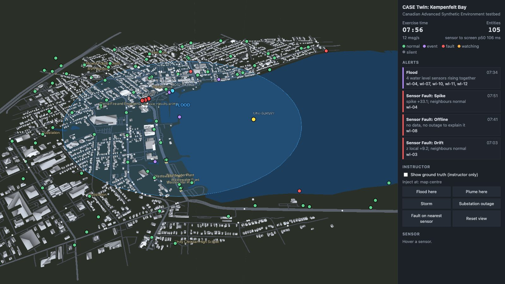
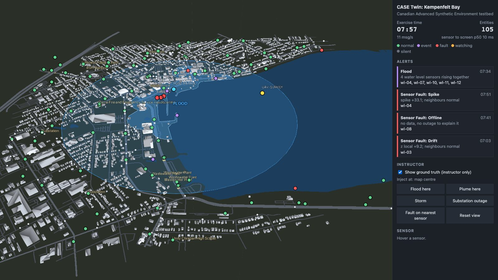
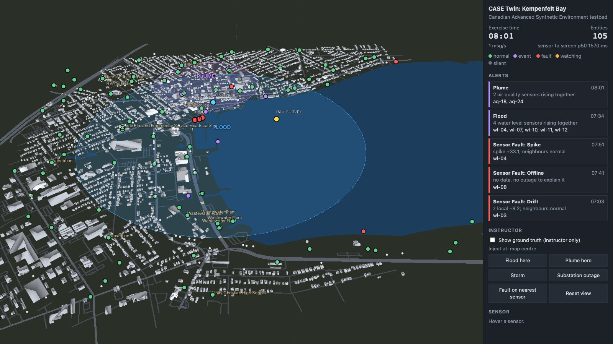

CASE Testbed: A Synthetic Environment and Digital Twin
A distributed synthetic environment shaped by the Canadian Advanced Synthetic Environment project: a real town rebuilt from open map data, simulated traffic and infrastructure sensors, floods, plumes, storms and power cuts, a second training site joining over a WAN with the DIS standard, a ROS 2 robot, and a digital twin that has to tell a broken sensor from a real emergency.
Overview
The CASE Testbed is a working synthetic environment and digital twin. Downtown Barrie and Kempenfelt Bay, rebuilt from OpenStreetMap, carry 100 simulated vehicles and 95 virtual sensors; a second training site joins over a wide-area network with a survey UAV, an emergency convoy and a ROS 2 robot; and a twin watches it all in 3D. Everything runs end to end in Docker today and was measured against the simulator's own ground truth.
The DND project, listed in the Defence Capabilities Blueprint at $50 million to $99 million, set out to establish network-based infrastructure and processes for distributed mission training, joint mission rehearsal, and air and ground crew training. Its first phase, the distributed mission training network and simulation architecture, is complete; its second phase delivers part-task trainers for RCAF aircraft maintenance technicians. This build follows the first phase: a shared synthetic world, more than one site, a standard way to exchange what every entity is doing, and the tools an instructor needs to run and review an exercise.
The hard part of a digital twin is not drawing it. It is believing it. When a water gauge jumps, is the lake rising or is the gauge broken? A naive detector raised 53 alerts in a four-hour exercise and blamed sensors for real events 36 times. The twin raised 19, found 10 of 11 sensor faults and all four real events, and never blamed a sensor for an event.
Repository: github.com/TYFSADIK/case-testbed (MIT licence; map data (c) OpenStreetMap contributors, ODbL).
The DND Project
From the public entry in the Defence Capabilities Blueprint, managed by the Directorate of Capability Integration at National Defence (read from the archived page of February 2026; the live site did not answer during this build).
| Item | Public detail |
|---|---|
| Project | Canadian Advanced Synthetic Environment (CASE), new project |
| Objective | Network-based infrastructure and processes for Distributed Mission Training, Joint Mission Rehearsal, and air and ground crew training |
| Phase 1 | Distributed Mission Training network and simulation architecture: complete |
| Phase 2 | Part task trainers for RCAF basic aircraft maintenance technician training at CFSATE, 16 Wing Borden: ongoing |
| Funding range | $50 million to $99 million (Phase 2) |
| Options analysis / definition | Completed / completed |
| Implementation | In progress |
| Initial and final delivery | 2025/2026 |
| Capability areas | Air; Emerging Technology; Training and Simulation |
| Investment areas | Simulation equipment and software; virtual training systems; emerging and advanced training techniques; information and communication technology; testing facilities; training services and support |
| Key industrial capability | Training and Simulation |
Requirement by Requirement
| Need | In this build |
|---|---|
| A virtual geographic environment from open map data | An OpenStreetMap extract of downtown Barrie: 3,133 buildings with heights, 109 km of roads as a routable graph, 5 bridges, the bay, 3 substations, the fire headquarters, police, a hospital clinic, schools and wastewater plants |
| Virtual sensors, vehicles and infrastructure | 95 sensors: 16 water-level gauges, 27 air-quality, 40 traffic counters, 5 bridge strain gauges, 4 weather stations, 3 substation loads. Traffic counts and bridge strain come from 100 simulated vehicles, not from a random number generator |
| Environmental events | Storm, flood from the bay, a Gaussian air plume, a substation outage; scripted in a scenario file or injected live by the instructor |
| Distributed mission training network | Two sites, IEEE 1278.1 DIS entity-state messages with dead reckoning, a site gateway, real WAN latency and loss on the link |
| Stream into a backend, show it in 3D | MQTT and DIS into a FastAPI backend, PostGIS, and a CesiumJS viewer over a WebSocket |
| AI-based anomaly detection | An IsolationForest per sensor type plus spatial reasoning that separates sensor faults from real events |
| Joint mission rehearsal and review | Instructor injects, an instructor-only ground-truth overlay, and a hash-chained recording that replays to identical alerts |
| ROS 2 | A ROS 2 Jazzy patrol robot joins the exercise through a ROS 2 to DIS bridge |
| Part task trainers (Phase 2) | Not built: aircraft maintenance trainers are a different product. The instructor's inject-and-review loop is the part that carries over |
The Synthetic Environment
The world is built from a fixed OpenStreetMap extract, so every service builds exactly the same town without exchanging it: building footprints with heights, the road network as a directed graph, Lake Simcoe's outline, bridges and civic assets. Sensors are placed by rule: water gauges every few hundred metres along the shoreline and on the creeks, air-quality sensors on a 450 m grid over land, traffic counters on major roads, a strain gauge on every bridge, weather stations at civic buildings, and a load meter at each substation.
The physics is simple on purpose and explicit in code. A flood raises the water at gauges with a decay from its centre and closes the roads it covers, and the vehicles re-route. A plume follows a Gaussian plume model downwind of its source at the wind of the moment. A storm cools the air, washes particulates out, raises the lake and the creeks and slows the traffic. An outage drops a substation's load and silences every mains-powered sensor it feeds. Sensors add noise, and faults change what a sensor reports without changing the world: stuck, drifting, offset, spiking, noisy, silent, or replaying old readings.

Fault or Real Event?
Every simulated minute the twin computes, for every sensor, how far it is from its nearest comparable neighbours, from the reference for its type, and from its own last hour, and whether it has gone flat, spiky or noisy compared with its own first half hour. An IsolationForest per sensor type, trained on that first half hour, flags unusual patterns; robust thresholds confirm there is real magnitude behind them.
Then it explains them in space. Nearby sensors deviating the same way and agreeing with each other are one event: a flood, a plume, a storm. A substation whose load collapses, or whose sensors fall silent together, is an outage, and those silences are explained. A sensor with a fault signature, one that goes silent for no reason, or one that stays alone for 8 of 15 minutes, is a sensor fault. Until then a lone deviation is shown as unexplained, watching, because a single sensor rising sharply can honestly be either. The spoofed gauge in exercise 1, which replays pre-flood readings in the middle of the flood, was caught in 60 seconds by the jump it made and kept out of the flood's evidence.
Each event's footprint goes to PostGIS to answer the question an operator actually has: what does it threaten? A flood uses the shoreline band inside its evidence; an outage uses the failed substation's service area. In exercise 1 the flood threatened 206 buildings, 10.8 km of road and the police station when it opened, and the outage cut a substation serving 598 buildings including the fire headquarters.
Two Sites over DIS
Site B is a second training site: a survey UAV flying a racetrack over the bay at 18 m/s, a three-vehicle emergency convoy driving from the fire headquarters to the waterfront, and a ROS 2 patrol robot. They publish Distributed Interactive Simulation (IEEE 1278.1) entity-state messages through a site gateway, across a link where the rehearsal adds latency and loss with Linux netem.
Every federate runs the same dead-reckoning model as the receivers and only sends when the receivers' extrapolation would be off by more than a threshold, or every five seconds. That cut site A's traffic to 360,256 messages for 100 vehicles over four hours, 75% fewer than one per vehicle per second. The WAN result is the interesting one:
Extrapolating from the moment a message arrives loses speed times latency: 5.5 m for the UAV at 300 ms. Extrapolating from the message's own timestamp cancels the WAN almost completely (0.35 m at 300 ms, 0.24 m with 2% loss), but only if the sites' clocks agree. For a real distributed exercise that makes time synchronisation between sites a requirement, not a nicety.
Instructor and After-Action Review
The instructor scripts an exercise as a list of events and faults with times and places, or clicks the map to inject a flood, a plume, a storm, an outage or a sensor fault live. An instructor-only overlay shows the ground truth, so the instructor can see where the twin's picture and reality differ; trainees never see it, and neither does the detector.


Everything the twin receives is written to a recording before it is processed, each line carrying the SHA-256 hash of the line before. Replaying the four-hour exercise through a fresh twin took 13.9 seconds and produced the identical 143 alert changes in the same order: the after-action review sees exactly what the operators saw.
Measured Results
Exercise 1 is four simulated hours with 11 injected sensor faults and four real events, run at 20 times real time across the Docker stack and scored against the simulator's ground truth. These numbers are from the final rehearsal.
| Exercise 1, final run | Twin | Naive per-sensor detector |
|---|---|---|
| Alerts an operator sees | 19 | 53 |
| Sensor faults confirmed | 10 of 11, median 3 min | 9 of 11, median 5 min |
| Real events recognised (storm, flood, plume, outage) | 4 of 4, median 4 min | 0 of 4 |
| False fault alerts | 0 | 4 |
| Real events blamed on sensors | 0 | 36 |
| Check | Result |
|---|---|
| Same exercise, four traffic and noise seeds | 10 of 11 faults, 4 of 4 events, 0 false fault alerts, 0 events blamed on sensors in every seed |
| Held-out exercise 2 (never used for tuning) | 10 of 10 faults (9 of 10 before one rule added after seeing it), 3 of 4 events, 0 false fault alerts; the naive detector raised 68 alerts. The missed plume blew away from the sensors |
| Slowest fault | an 8 ug/m3-per-hour drift: flagged "unexplained, watching" after 42 min, not confirmed before the exercise ended |
| After-action replay | 466,497 records, hash chain intact, replayed in 13.9 s to the identical 143 alert changes |
| Latency | sensor to backend 1.3 ms median (3.8 ms p95); sensor to a WebSocket subscriber 7.9 ms median (25 ms p95), real time |
| Instructor inject | plume released at the police station to plume alert on the twin: 177 s, real time |
| Dead-reckoning bandwidth | 360,256 messages for 100 vehicles over four hours, 75% fewer than one per vehicle per second |
| Impacts from PostGIS | flood: 206 buildings, 10.8 km of road, the police station; outage: 598 buildings served, including the fire headquarters |
| Field node path | registered on the map and stored in PostGIS as hardware (stand-in node in the rehearsal) |
| WAN, gateway to twin | UAV: last report | UAV: dead reckoning from arrival | UAV: from timestamp | UAV messages/s |
|---|---|---|---|---|
| LAN | 37.5 m | 0.15 m | 0.07 m | 0.40 |
| 50 ms | 32.0 m | 1.01 m | 0.15 m | 0.54 |
| 150 ms | 31.2 m | 2.79 m | 0.24 m | 0.56 |
| 300 ms | 34.5 m | 5.52 m | 0.35 m | 0.56 |
| 150 ms, 2% loss | 39.6 m | 2.78 m | 0.24 m | 0.56 |
| 150 ms, 0.25 m threshold | 29.2 m | 2.77 m | 0.09 m | 0.99 |
| 150 ms, 3 m threshold | 33.7 m | 2.93 m | 0.63 m | 0.38 |
What the Rehearsal Found
Two exercises, four seeds and two full Docker runs. The most important findings:
| What happened | Why | Fix |
|---|---|---|
| A bridge gauge 13 standard deviations off for an hour scored as normal | IsolationForest saturates far outside its training data when only one feature is extreme | The forest judges patterns; robust thresholds confirm magnitude; a very large deviation counts on its own |
| Unflooded gauges were called faulty during the flood | The flood dragged the "all gauges" reference up with it | The reference leaves out sensors already explained by an event |
| On three of four seeds the spoofed gauge was folded into the flood | Its "disagrees with neighbours" score outranked its abrupt jump | Fault signatures win, and a misbehaving sensor is never evidence for an event |
| The replay gave alerts in a different order | Python's set order depends on the process | Sorted everywhere: replay now identical |
| Held out: a drifting weather station hid inside a storm | Absorbed as storm evidence | Members of an area-wide event must agree with each other (9 of 10 faults before, 10 of 10 after) |
| Held out: a plume was not detected | It blew away from the sensors: +7 ug/m3 at one sensor | Not fixable in the detector: a coverage gap the twin should show next |
| No sensor reading reached the database in the first Docker run | A reading's own "type" field overwrote the pipeline's tag | Fixed, with a regression test |
| A flood footprint flagged 1,058 buildings; 119 were really flooded | The footprint was a circle around the evidence | Shoreline band: 320 buildings, all 119 inside |
| The ROS 2 robot seemed to jump 20 m in two WAN windows | Buffered truth logs lost their tail when a federate was restarted | Logs flush every line, gaps are not scored; matrix re-run clean |
The full list, including what is still open, is in docs/04-findings.md.
How to Build It
- One machine: Docker with 6 CPUs and 8 GB, then
./local/rehearse.sh upand openhttp://127.0.0.1:8000../local/rehearse.sh testruns the whole rehearsal in about 45 minutes. - A field sensor node (about $120 CAD): an ESP32 with a BME280, a PMS5003 particulate sensor and a JSN-SR04T ultrasonic gauge pointed at the water, on a small solar charger. It publishes the same messages as the simulated sensors and appears on the map next to them. Wiring and firmware are in the repository.
- A second site: run the site B services on a second machine and point its gateway at site A; impair the link with netem and watch the convoy lag and recover.
- A real robot (optional): publish its pose on
/patrol/poseand run the ROS 2 to DIS bridge. - Write an exercise: a short YAML file of events and faults;
python tools/offline.py --scenarioshows how the twin would do in two minutes.
Safety Notes
- The field node is low voltage, but it lives outdoors near water: seal it, fix it firmly, and use public waterfront only with permission.
- DIS has no authentication. Keep exercise traffic on an isolated network or a VPN between sites, and secure MQTT before any real device joins (credentials, TLS, per-device topics).
- Ground truth is for the instructor only. In a real exercise it belongs on a separate role or network.
Frequently Asked Questions
What is the Canadian Advanced Synthetic Environment project?
CASE is a National Defence project in the Defence Capabilities Blueprint to establish network-based infrastructure and processes for distributed mission training, joint mission rehearsal, and air and ground crew training. Its first phase, the distributed mission training network and simulation architecture, is complete; its second phase delivers part task trainers for RCAF aircraft maintenance technicians at 16 Wing Borden, with a funding range of $50 million to $99 million.
Is this the CASE system?
No. It is an independent open-source build shaped by the public description of the project, to learn and show how a distributed synthetic environment and digital twin work. It is not affiliated with or submitted to DND, and it models a civilian town from public map data.
How does the twin tell a broken sensor from a real event?
It compares every sensor with its comparable neighbours, its type and its own last hour, scores the pattern with an IsolationForest, and then reasons in space: nearby sensors moving together and agreeing are an event; a sensor that flat-lines, jumps, turns noisy, goes silent without an outage, or stays alone for 8 of 15 minutes is a fault. In the final run it found 10 of 11 faults and 4 of 4 events with no false fault alerts.
What is DIS and why does dead reckoning matter?
Distributed Interactive Simulation (IEEE 1278.1) is a standard for simulators to share what every entity is doing. To save bandwidth each simulator sends an update only when the receivers' extrapolation would be wrong by more than a threshold. Across a 300 ms WAN, extrapolating from the arrival time left the UAV 5.5 m off; extrapolating from the message timestamp left it 0.35 m off.
Can I run it without any hardware?
Yes. Everything, including both sites, the ROS 2 robot and a stand-in for the field sensor node, runs in Docker on one machine. The hardware makes it real: a second machine for a real WAN, and an ESP32 sensor on the water.
What Happens Next
- Next: the ESP32 field node on the waterfront, reporting into the twin next to the simulated gauges.
- Then: site B on a second machine over a real link, with clocks synchronised by NTP and then PTP to measure the timestamp result for real.
- Later: a real ROS 2 rover joining over the bridge, sensor-coverage maps so the twin can say where it is blind, and an HLA bridge at the gateway.
Cite This Page
Citation formats
Plain text
Taki Sadik, "CASE Testbed: A Synthetic Environment and Digital Twin", TYFSADIK, https://tyfsadik.org/work/defence/canadian-advanced-synthetic-environment (accessed 2026-11-23).BibTeX
@misc{sadik-case-testbed,
author = {Sadik, MD. Taki Yasir Faraji},
title = {CASE Testbed: A Synthetic Environment and Digital Twin},
year = {2026},
url = {https://tyfsadik.org/work/defence/canadian-advanced-synthetic-environment},
urldate = {2026-11-23}
}APA
Sadik, M. T. Y. F. (2026). CASE Testbed: A Synthetic Environment and Digital Twin. TYFSADIK. https://tyfsadik.org/work/defence/canadian-advanced-synthetic-environment